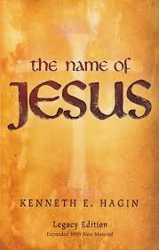

kenneth E. Hagin
An American preacher known for his unwavering faith

Biography
Reverend Kenneth Erwin Hagin was born August 20, 1917 in Mackinney Taxas to Lilie Viola Drake Having and Jess Hagin. According to his testimony, he born with a deformed heart and an incurable blood disease. At age 15 he became paralyzed and bedridden. In April 1933, he converted to Christianity during which he had a dramatic experience, he reported dieing from the sickness three times for 10 minutes and each time was taken to hell to experience the horror of it and then brought back to life. In August 8, 1934, he says he was miraculously healed, he was raised off his deathbed by a revelation of faith in God's Word reading Mark 11:23–24.He was also healed of his paralysis and never struggled with walking again. Jesus appeared to Reverend Kenneth Hagin eight times over the next several years in visions that changed the course of his ministry. Reverend Hagin married his wife Oretha Rooker On November 25, 1938. They had two children. Their first child Kenneth Wayne Hagin, known as Kenneth Hagin Jr., was born on September 3, 1939. A daughter, Patricia (Hagin) Harrison, was born 19 months later on March 27, 1941.His son Kenneth Wayne Hagin is currently the pastor of Rhema Bible Church and President of Kenneth Hagin Ministries.
Mark 11:23-24 defined his ministry and was his most frequently quoted verse:For verily I say unto you, That whosoever shall say unto this mountain,
be thou removed and be thou cast into the sea, shall not doubt in his heart,
but shall believe that those things which he saith shall come to pass, he shall have
whatsoever,he saith. Therefore I say unto you, What things soever ye desire, when ye pray, believe that
ye receive them, and ye shall have them.
Accomplishment
In 1967, he began a regular radio broadcast that continues today as Rhema for Today. In 1968 Rev. Hagin published the first issues of The Word of Faith. That magazine, now produced nine times a year, has a circulation of over 200,000. The publishing outreach he founded, Faith Library Publications, has circulated worldwide more than 65 million copies of books by Rev. Hagin, Kenneth W. Hagin, Lynette Hagin, Craig W. Hagin, and several other authors. Faith Library Publications also has produced millions of audio and video teachings. Other outreaches of Kenneth Hagin Ministries include :
- Rhema Praise, a weekly television broadcast hosted by Revs. Kenneth and Lynette Hagin; Rhema Correspondence Bible School
- Rhema Alumni Association
- Rhema Ministerial Association International
- The Rhema Prayer and Healing Center
- Rhema prison ministry
In 1936, he founded his first non-denominational church. He preached his first sermon as the pastor of a small, community Baptist church in Roland, Texas. In 1937, he became an Assemblies of God minister. During the next twelve years he pastored five Assemblies of God churches in Texas: in the cities of Tom Bean, Farmersville (twice), Talco, Greggton, and Van. Van, Texas was the last church he pastored before starting to travel. On November 25, 1938, he married Oretha Rooker.They had two children. Their first child Kenneth Wayne Hagin, known as Kenneth Hagin Jr., was born on September 3, 1939. A daughter, Patricia (Hagin) Harrison, was born 19 months later on March 27, 1941. His son Kenneth Wayne Hagin is currently the pastor of Rhema Bible Church and President of Kenneth Hagin Ministries. Hagin began an itinerant ministry as a Bible teacher and evangelist in 1949 after an appearance by Jesus.He joined the Voice of Healing Revival in the U.S. with Oral Roberts, Gordon Lindsay and T. L. Osborn between 1947 and 1958. Hagin was given full admission to the Full Gospel Business Men's Fellowship International (also known as the FGBMFI) which had been established in 1951.
Books
